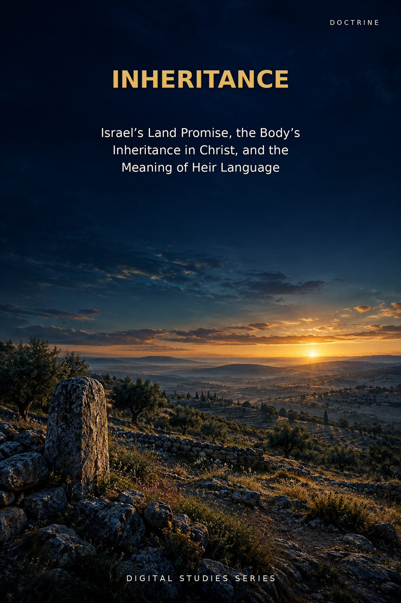
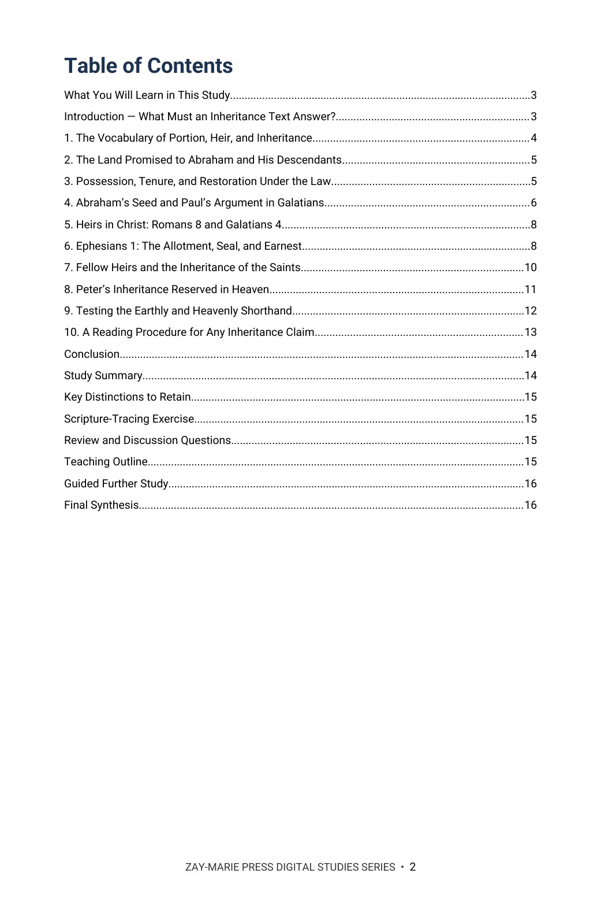
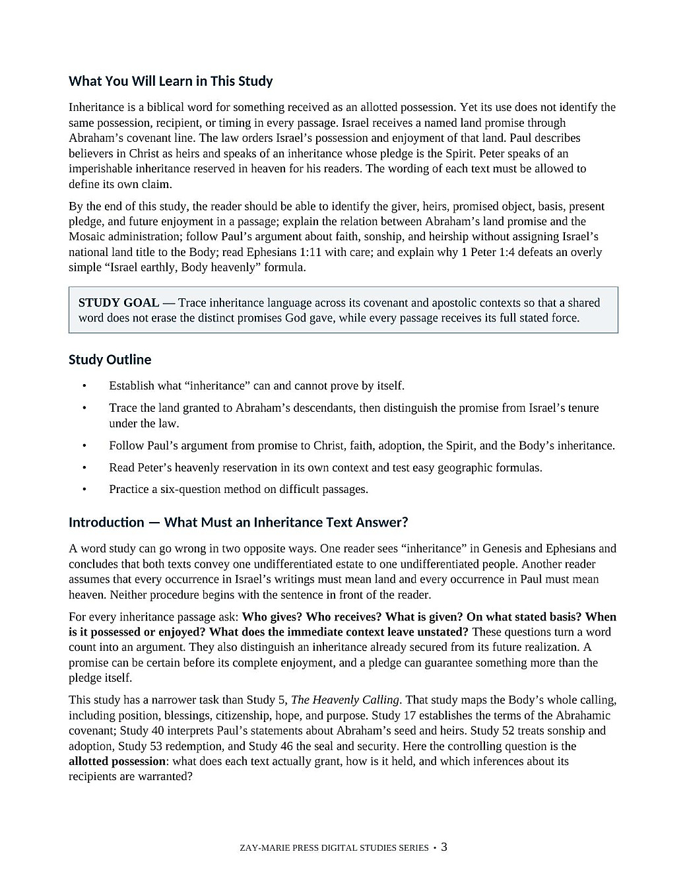
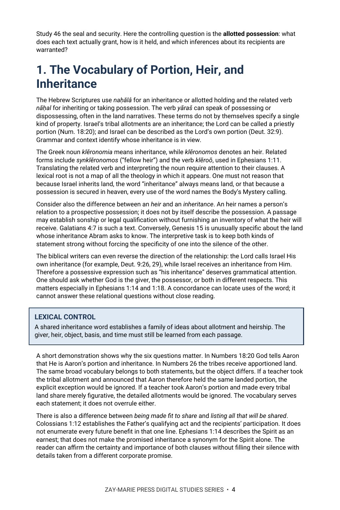

Inheritance
Israel’s Land Promise, the Body’s Inheritance in Christ, and the Meaning of Heir Language
A passage-by-passage word study of promise, heirship, and possession
What does Scripture actually grant when it calls someone an heir? This study asks who gives, who receives, what is promised, on what basis, and when it is enjoyed. It follows Israel’s named land promise, Paul’s teaching about heirs in Christ, and Peter’s imperishable inheritance reserved in heaven.
The same inheritance vocabulary does not make every promised possession identical. Read Genesis, Deuteronomy, Galatians, Romans, Ephesians, Colossians, and 1 Peter with each passage’s recipients and stated object in view.
What Does Each Heir Receive?
God names a land for Abraham’s covenant line; the law orders Israel’s enjoyment and anticipates judgment and restoration. Paul calls believers sons and heirs in Christ, names the Spirit as the earnest of an inheritance, and describes Gentiles as fellow heirs in one Body. Peter promises an imperishable inheritance reserved in heaven. The study reads these statements together without making a shared word settle what each passage leaves unstated.
Study 5 surveys the Body’s wider heavenly calling; this study examines the narrower question of what inheritance passages say an heir receives. Study 17 establishes the Abrahamic covenant’s line, land, nation, and blessing, while Study 56 follows how the promised land is held, historically possessed, and expected after dispersion. Study 40 asks how Paul uses Abraham’s seed, faith, and promise; this study compares that heir language with other apostolic inheritance passages. Study 52 establishes sonship and adoption; this study asks what follows from the status of heir. The question Study 56 alone follows across these settings is: who inherits what, on what basis, and when?
How These Studies Relate
Study 56 traces the promised possession in each context. These neighboring studies establish the covenant, calling, and heir status needed for that comparison.
Study 5 — The Heavenly Calling Read the full pattern of the Body’s position, blessings, citizenship, hope, and purpose; then use Study 56 to examine the inheritance language within it.
Study 17 — The Abrahamic Covenant Establish the covenant’s named land and line in Genesis before comparing later claims about heirs and possession.
Study 40 — Who Is Abraham’s Seed? Follow Paul’s specific seed and promise argument in Romans and Galatians; then test inheritance claims across a wider group of passages.
Study 57 — The Eternal Purpose of God Read Ephesians 1–3 on purpose and headship after Study 56 identifies the heirs and objects each inheritance passage names; one comprehensive purpose does not silently transfer Israel’s land grant.
Read the Promise, the Heir, and the Possession
Inheritance Vocabulary
Trace naḥălâ, klēronomia and the related terms through their clauses, noting what each leaves unstated about giver, heir and object.
The Land Promise
Follow Genesis 15:8, Genesis 17:7–8 and Deuteronomy 30:1–5, noting the object each names and how the Mosaic law orders Israel’s tenure.
Heirs in Christ
Read Galatians 3–4 and Romans 8 in sequence, marking each step Paul names from promise to faith, the Spirit, adoption and heirship.
The Spirit’s Earnest
Work through Ephesians 1:11–14 and 3:6 clause by clause, marking the pronouns, the verb in verse 11 and the word “earnest.”
Peter’s Reserved Inheritance
Read 1 Peter 1:1–9 in its own setting, noting its addressees and what “reserved in heaven” does and does not state.
A Repeatable Reading Method
Practice six questions on each passage: giver, heir, object, basis, timing and what the text leaves unstated.
Compare the Texts Without Flattening Them
Genesis 15:7–21
Trace Abram’s question about inheriting and the object God names in answer.
Deuteronomy 30:1–10
Mark who is addressed, what is gathered, and the land that is possessed.
Galatians 3:14–29; 4:4–7
Follow the sequence from promise and blessing to the Spirit, adoption and heirs.
Romans 8:14–25
Note how children, joint heirs, suffering and future glory are joined.
Ephesians 1:11–18; 3:6
Compare the pronouns “we,” “ye” and “our,” the earnest, and the fellow-heir coordination.
Joshua 21:43–45
Read the fulfillment and rest language in its historical setting.
Colossians 1:12–14
Observe what the Father’s qualifying act states and what it leaves unlisted.
1 Peter 1:1–5
Mark the addressees, the three adjectives, and who keeps whom.
A Question for Every Inheritance Text
Who gives? Who receives? What is given? On what basis? When is it enjoyed?
These questions keep a shared word from answering a question the passage never addresses.
Preview the Study Before You Purchase
Click any page to enlarge it for reading.


Table of Contents
See the study’s full sequence and the passages it compares.


What You Will Learn
Read the goal, questions, and method that guide the study.


The Vocabulary of Inheritance
See how the word study begins with the heir and the object actually named.
A Focused Study of Inheritance
20-Page Digital PDF
Approved cover and 19-page interior with a numbered table of contents.
Ten Teaching Sections
Move from vocabulary and covenant land to Paul’s and Peter’s inheritance passages.
Passage Comparison Table
Compare recipients, stated inheritance, and each text’s interpretive limit.
Key Distinctions
Keep covenant grant, tenure, sonship, present pledge, and future enjoyment distinct.
Scripture-Tracing Exercise
Apply six questions to the governing passages before comparing conclusions.
Teaching Outline and Further Study
Use the reading method to teach the subject and continue the investigation.
Inheritance
20-page digital PDF · For personal use